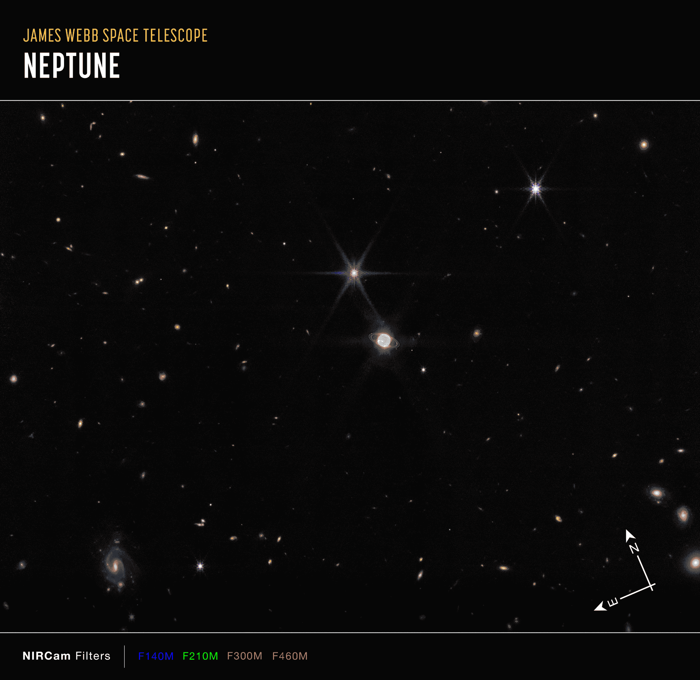

<!doctype html>
<meta charset="utf-8">
<title>Neptune</title>
<link rel="stylesheet" href="css/styles.css">
	<header>
				
		<nav>
			<a href="index.html">Home</a>
			<a href="neptune.html">Neptune</a>
			<a href="tarantula.html">Tarantula Nebula</a>
			<a href="cartwheel.html">Cartwheel Galaxy</a>
			<a href="cosmic.html">Cosmic Cliffs</a>
			<a href="newsletter.html">Newsletter</a>
		</nav>
		 
		<h2>This image of Neptune and its rings and moons, captured by Webb’s Near-Infrared Camera (NIRCam), shows compass arrows and a color key for reference.</h2>
		<h2>The north and east compass arrows show the orientation of the image on the sky. Note that the relationship between north and east on the sky (as seen from below) is flipped relative to direction arrows on a map of the ground (as seen from above).</h2>
		<h2>This image shows invisible near-infrared wavelengths of light that have been translated into visible-light colors. The color key shows which NIRCam filters were used when collecting the light. The color of each filter name is the visible light color used to represent the infrared light that passes through that filter.</h2>&nbsp; &nbsp; &nbsp;
	</header>
	<footer>
	<nav id="fNav">
			<a href="index.html">Home</a>
			<a href="neptune.html">Neptune</a>
			<a href="tarantula.html">Tarantula Nebula</a>
			<a href="cartwheel.html">Cartwheel Galaxy</a>
			<a href="cosmic.html">Cosmic Cliffs</a>
			<a href="newsletter.html">Newsletter</a>
		</nav>
<h5>&copy; Coppyright 2023 Wade Miller Seaway Software Developers. All Rights Reserved.</h5>
		<h5>Last Updated: March 29, 2023</h5>
		<h5>This site is for educational purposes only!!</h5>
<h4>**FAIR USE**</h4>

<h6>Copyright Disclaimer under section 107 of the Copyright Act 1976, allowance is made for “fair use” for purposes such as criticism, comment, news reporting, teaching, scholarship, education and research.<br>Fair use is a use permitted by copyright statute that might otherwise be infringing. <br>Non-profit, educational or personal use tips the balance in favor of fair use. </h6>

		<a href="https://webbtelescope.org/home">IMAGE: NASA, ESA, CSA, STScI, Webb ERO Production Team
</a>

	</footer>
		


